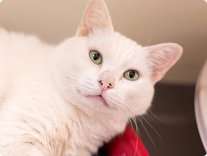

Polvilho é puro carinho em forma de gatinho. Muito dócil e apegado, ele adora estar por perto e receber atenção. Possui uma condição especial que exige alguns cuidados contínuos, mas nada que diminua sua vontade de amar e ser amado. É um companheiro fiel, perfeito para quem busca um vínculo forte e cheio de afeto.